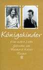
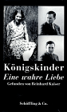

KÖNIGSKINDER - Eine wahre LiebeKurzbeschreibung
Das Buch erzählt die Geschichte zweier Liebender: des Deutschen Rudolf Kaufmann und der Schwedin Ingeborg Magnusson, die sich 1935 in Bologna kennenlernten. Einmal besuchte er sie in Stockholm, und einmal sie ihn in Deutschland -

im übrigen bleiben ihnen nur die Briefe. Sie erzählen die traurige Geschichte einer im doppelten Sinne "wahren Liebe", einer Liebe zur falschen Zeit. Sie erzählen auch ein Kapitel aus der Geschichte der Ausgrenzung und Verfolgung der Juden in Deutschland. Auf vielfältige Weise spiegelt sich die große Geschichte in der kleinen Geschichte zweier Liebender - im privaten Schicksal der jungen sprachbegabten Schwedin und des in Königsberg aufgewachsenen, evangelisch getauften, jüdischen Geologen. "Königskinder" ist auch die spannende Geschichte der Entdeckung der Briefe und der darin verborgenen Lebensgeschichten.
Geschwister-Scholl-Preis

Information über den jährlichen Literatur-Preis, die bisherigen Preisträger mit ihren Büchern und mehr.